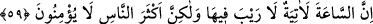
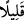
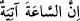

kötülük yapanın toplamından ibaret olduğu halde böyle bir atıf olabilmiştir. Çünkü
vasıfları değişmiştir. Demek istiyoruz ki: İlk ikisinde (kör ile görende) ilim
kasdedilmektedir. Çünkü hem körlük hem de basiret kalpte olur. Son ikisinde ise amel
kasdedilmektedir. Zira îman da ameller de organlarla ilgilidir. Yoksa gerçekte,
“gören”le kasdedilen de “inanıp sâlih ameller işleyenler”le kasdedilen de aynıdır;
“kör”le kasdedilen de “kötülük eden”le kasdedilen de aynıdır.
Maksad açısından her iki vasfın da aynı olmasından hareketle aynı anda hem zâhirî
mânânın hem de temsîlî mânânın kasdedilmiş olması da câizdir. Şöyle ki: İlk ikisiyle
kasdedilen de iyilik yapanla kötülük yapandır. Zâhirî mânâ “inanıp sâlih amel
işleyen”le “kötülük yapan”a göredir. Temsilî mânâ ise mâkabline göredir. Zira “kör” ve
“gören” ifadeleri, temsil kabilindendir.
“Ne kadar az düşünüyorsunuz?” “ lafzı, ibârede yer almayan bir “tezekküran”
masdarının sıfatıdır. “ ” ise azlık anlamını pekiştirmektedir. “Düşünüyorsunuz” fiili de
” ise azlık anlamını pekiştirmektedir. “Düşünüyorsunuz” fiili de
“düşünüyorlar”dan iltifat metoduyla muhâtap bir fiildir. Böyle bir kınama yerinde gâib
sîgasından muhataba geçilmesinin faydası, şiddetli bir sertlik ve tesirli bir inkâr ortaya
koymaktır. Mânâ: “Siz ey cedelci kâfirler! Ne kadar kıt bir düşünce ile düşünüyorsunuz
böyle!” şeklindedir. Demek istiyor ki: Siz görebilmenin, gafletten çok daha iyi
olduğunu, bunların birbirine denk olmadığını; ayrıca sâlih amelle fâsid amelin de böyle
olduğunu bilirsiniz. Ama az bir düşünce dışında düşünmezsiniz! Ya da “hiç
düşünmezsiniz!” Çünkü bir şeyin “az bulunduğu” bildirilerek “hiç olmadığı” da
belirtilebilmektedir. Sözgelimi “falancanın hayâsı azdır” demek, “o hayâsız biridir”
demektir.
Tâcü’l-masâdir’de der ki: “Tezkîr”, hatırlamak, bağlamak demektir.
59. Kıyamet günü mutlaka gelecektir, bunda hiç şüphe yoktur. Fakat insanların
çoğu buna inanmazlar.
“Kıyâmet günü mutlaka gelecektir.” Muhâtaplar kâfirler olduğu için (kıyâmetin
geleceği) ayrıca “lâm” harfi ile “mutlaka” diye tekid edilmiştir. Tâhâ sûresinde ise
kendisine kıyâmetten bahsedilen Hz. Mûsâ, şüpheci olmadığından, sadece “:
Kıyâmet gelecektir” (Tâhâ 20/15) denmiştir. Burhânu’l-Kur’an’da da böyledir.
“Bunda,” yâni son derece âşikâr şâhidleri olduğu için, ki bunlardan biri olan
“göklerin yaratılması..” âyeti az önce geçmişti (bk. el-Mümin 40/57), onun geleceğinde
“hiç şüphe yoktur. Fakat, insanların çoğu” yâni kâfirler “buna inanmazlar.” Gerek şu
açıkça yaşanan olaylar hakkındaki düşüncelerinin kıtlığından gerekse elle tutulur gözle
görülür şeyleri anlamakta güçlük çektiklerinden, bunu tasdik etmezler. Bu inkâr ve
tekzîb, Allah’ın korumasına alıp inâyet nazarıyla baktıkları hâriç, bütün nefislerin